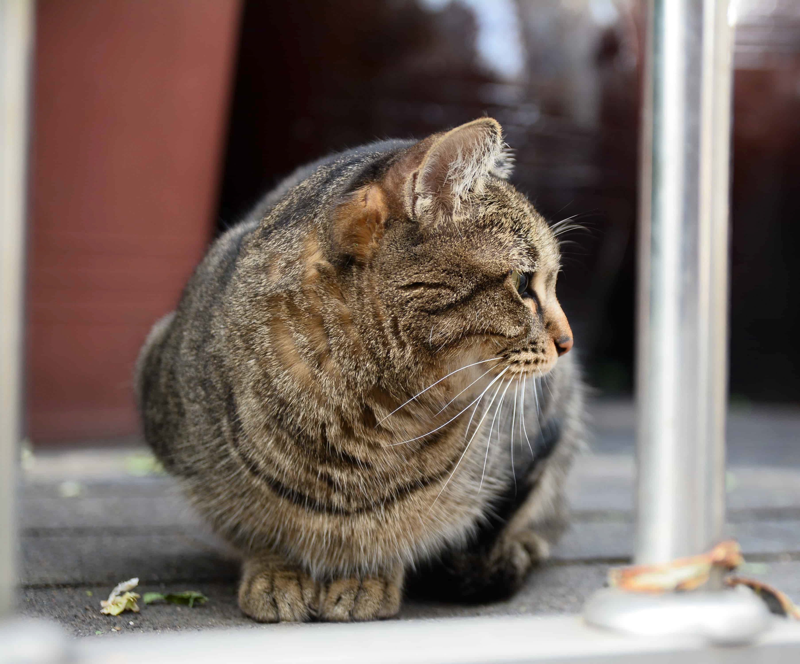
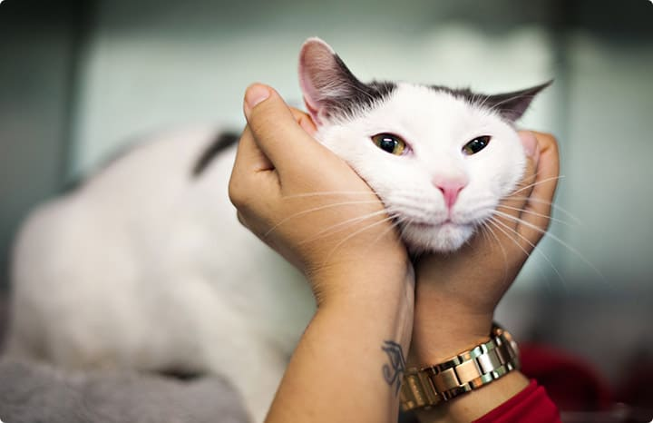

About
Consideratrion and Care
That's what neighbors do, no matter their species!
Pasionate New Yorkers continue to drive efforts to humainely reduce the population on feral and community cats in NYC

The mission of Community Cats is to bring about a time when there are No More Homeless Pets. We do this by helping end the killing in America's animal shelters through building community programs and partnerships all across the nation. We believe that by working together we can Save Them All.
Mission
To bring about a time when there are No More Homeless Pets.Vision
A better world through kindness to animalsGuiding principles
Golden Rule: To treat all living things as we ourselves would wish to be treated.Kindness: To demonstrate compassion and respect for all living creatures.
Positive influence: To judge our effectiveness by the extent to which animal lives are saved and improved, and by the positive experience of the people we touch.
Leadership: To lead by example, developing, promoting and sharing great new ideas and programs to help animals.
Authenticity: To do what we say we do.
Transparency: To be open and honest in our relationships.